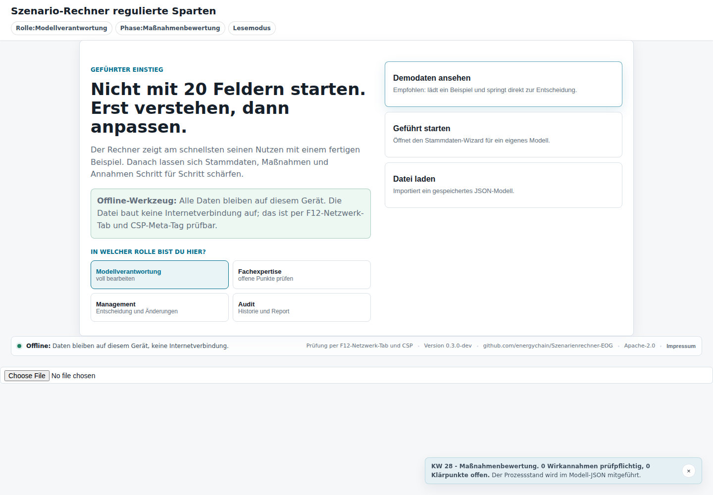
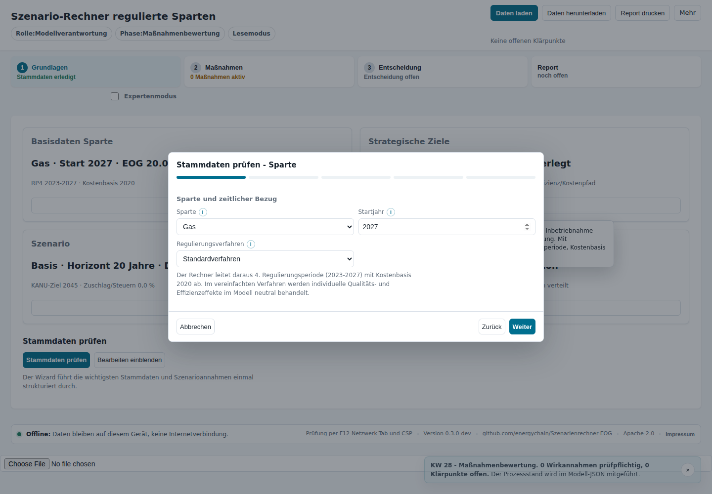
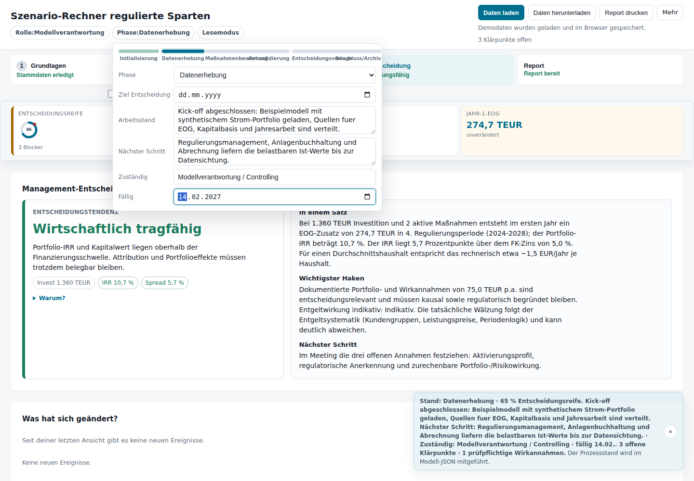
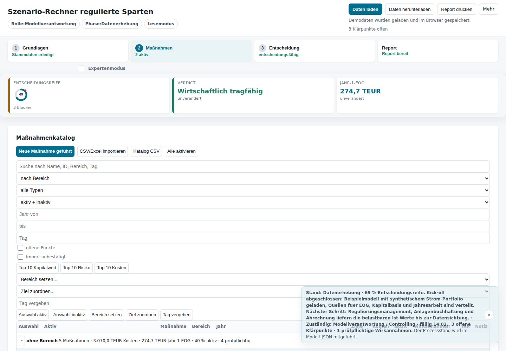
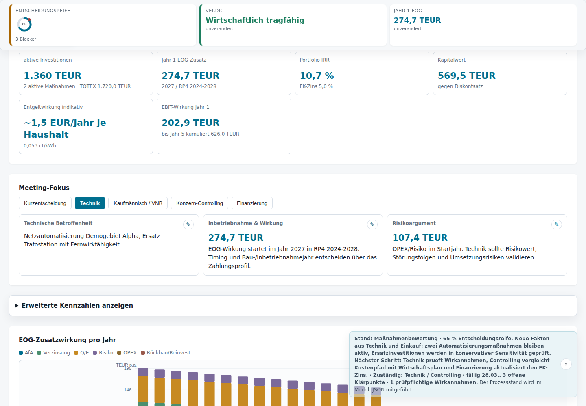
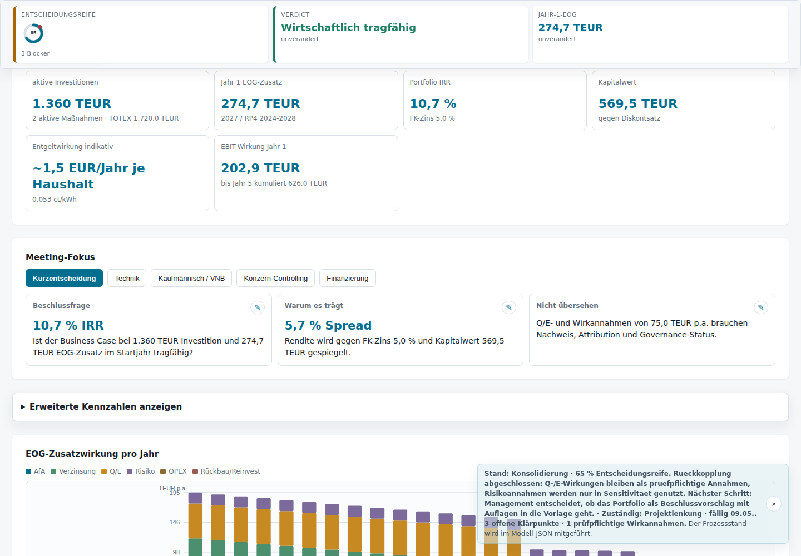
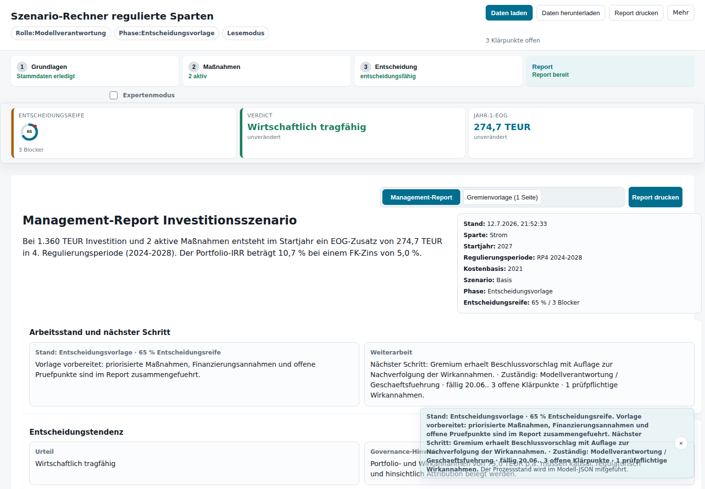
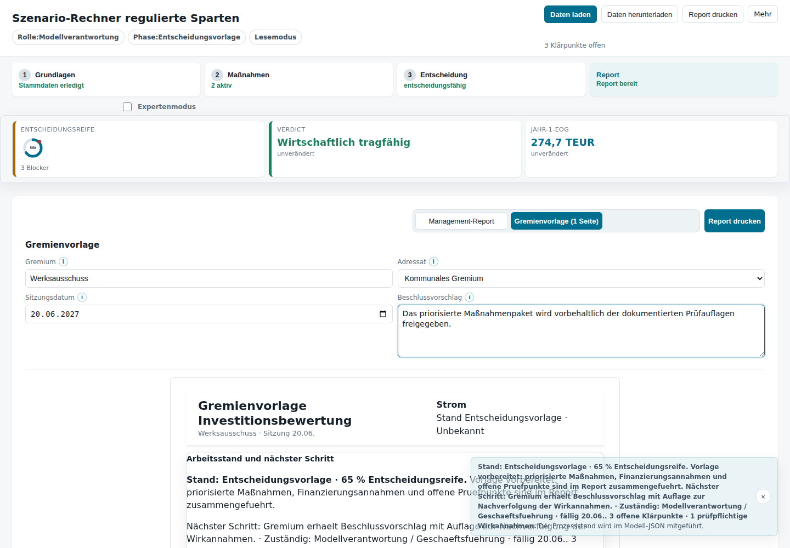
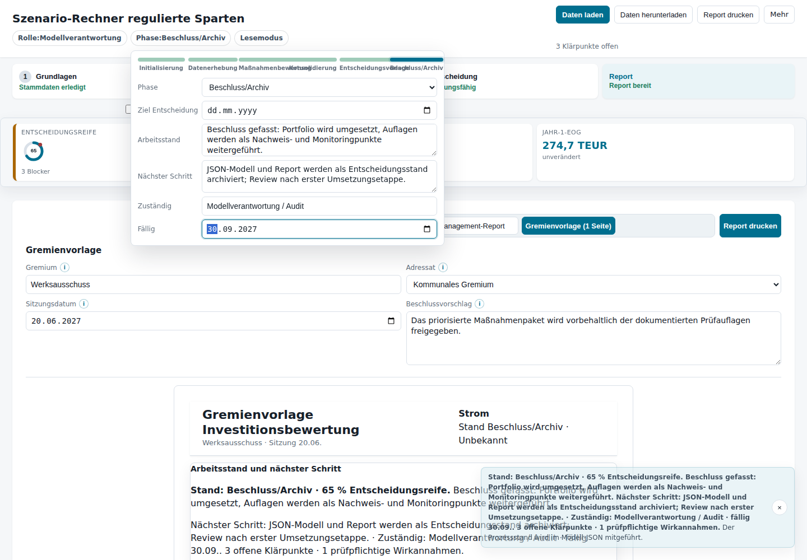

Fiktive Userstory: Eine komplette EOG-Planungsrunde über mehrere Monate
Projektkontext: Diese Story beschreibt einen fiktiven Regionalversorger, der ein Investitionsportfolio für eine regulierte Sparte vorbereitet. Alle Rollen, Zahlen, Namen und Termine sind synthetisch. Die Story zeigt nicht nur die Bedienung der App, sondern vor allem, wie neue Fakten, Meetings, Rückfragen und Entscheidungen über mehrere Monate den weiteren Planungsweg beeinflussen.
Ziel der Runde: Aus einem ersten, unscharfen Maßnahmenbündel soll bis zur Entscheidungsvorlage ein nachvollziehbares Portfolio werden: fachlich begründet, kaufmännisch prüfbar, regulatorisch transparent und später wieder aufgreifbar.
Rollen in der Story:
- Modellverantwortung: hält das Modell zusammen, dokumentiert Arbeitsstand und nächsten Schritt.
- Regulierungsmanagement: liefert EOG-, Kapitalbasis- und Anerkennungsannahmen.
- Anlagenbuchhaltung / Bilanzierung: prüft Aktivierbarkeit und Nutzungsdauern.
- Netzbetrieb / Asset Management: bewertet technische Notwendigkeit, Risiken und Wirkannahmen.
- Controlling / Finanzierung: plausibilisiert Kosten, Kapitalwert, IRR, FK-Zins und Wirtschaftsplananschluss.
- Management / Gremium: trifft keine Rechenentscheidung, sondern eine governance-fähige Investitionsentscheidung mit Auflagen.
Bidirektionale Navigation
Diese Story ist mit der Live-Anwendung verknüpft:
- Jeder Meilenstein enthält einen Link „Zur passenden Stelle in der Anwendung springen“.
- Die Anwendung zeigt im Prozesshinweis den Link „Story: …“ zurück zum passenden Kapitel.
- Die App-Links nutzen synthetische Demodaten und setzen Phase, Sicht und Arbeitsstand passend zum Story-Meilenstein.
Meilenstein 0 — Kick-off: Noch keine Tabellen, erst Orientierung
Zur passenden Stelle in der Anwendung springen

Zeitpunkt: Anfang Januar 2027
Die Planungsrunde beginnt nicht mit einem vollständigen Modell, sondern mit einem gemeinsamen Verständnis: Was soll entschieden werden? Welche Rolle hat wer? Welche Daten bleiben lokal? Die Modellverantwortliche öffnet die App im Kick-off und zeigt zuerst den geführten Einstieg.
Nutzung der App zu diesem Zeitpunkt:
- Die Startseite erklärt den Zweck des Rechners und die Offline-/lokale Datenhaltung.
- Die Runde wählt zunächst Modellverantwortung, weil die Stammdaten und Maßnahmen aktiv aufgebaut werden sollen.
- Noch wird kein Beschluss vorbereitet; der Rechner dient als gemeinsamer Strukturrahmen.
Neue Fakten / offene Punkte:
- Das Portfolio soll zunächst synthetisch vorbereitet und später mit internen Ist-Werten befüllt werden.
- Noch unklar sind: bestehende EOG, regulatorische Kapitalbasis, Jahresarbeit, Aktivierbarkeit einzelner Maßnahmen und belastbare Wirkannahmen.
Entscheidung für den weiteren Weg:
Die Runde entscheidet, nicht direkt alle Felder zu befüllen. Stattdessen wird der geführte Start genutzt, damit jedes Feld mit Quelle und fachlichem Kontext verstanden wird.
Meilenstein 1 — Initialisierung: Geführter Start mit fachlicher Kontext-Hilfe
Zur passenden Stelle in der Anwendung springen

Zeitpunkt: Mitte Januar 2027
Im ersten Arbeitsmeeting öffnet die Modellverantwortliche den Stammdaten-Wizard. Beim Feld Startjahr wird die neue Kontext-Hilfe angeklickt. Der Hinweis erklärt nicht nur, wie das Feld zu bedienen ist, sondern warum das Jahr fachlich wichtig ist: Es beeinflusst Regulierungsperiode, Kostenbasis und Cashflow-Zeitpunkt.
Nutzung der App zu diesem Zeitpunkt:
- Die Wizard-Schritte strukturieren die Stammdatenerhebung.
- Die
i-Hilfen werden gezielt geöffnet, wenn die Runde unsicher ist, wo ein Wert herkommt. - Statt sofort eine Zahl einzutragen, wird je Feld eine Quelle bestimmt.
Neue Fakten / Arbeitsannahmen:
| Eingabe | Erste Quelle / Klärung |
|---|---|
| Sparte | Spartenleitung und Regulierungsmanagement |
| Startjahr | Projektplan und Wirtschaftsplanung |
| Regulierungsverfahren | aktueller Regulierungsbescheid |
| Bestehende EOG | Regulierungsmanagement / Erlös- oder Netzentgeltkalkulation |
| Kapitalbasis | Anlagenbuchhaltung und regulatorisches Anlagevermögen |
| Jahresarbeit | Abrechnung, Mengenplanung oder testierter Jahresabschluss |
Rückkopplung:
Das Meeting zeigt, dass die App nicht nur Eingabemaske ist. Sie erzeugt eine Datenanforderungsliste: Wer liefert welche Zahl, und welche Zahl ist nur vorläufig?
Entscheidung für den weiteren Weg:
Die Initialisierung wird abgeschlossen. Als nächster Schritt wird eine Datensichtung mit Regulierungsmanagement, Anlagenbuchhaltung und Abrechnung angesetzt.
Meilenstein 2 — Datenerhebung: Arbeitsstand und nächste Abstimmung dokumentieren
Zur passenden Stelle in der Anwendung springen

Zeitpunkt: Februar 2027
Nach zwei Wochen liegen erste Werte vor. Die Modellverantwortliche lädt ein Beispielmodell und trägt im Prozessbereich ein, wo die Runde steht: Kick-off abgeschlossen, Quellen verteilt, Ist-Werte in Klärung.
Nutzung der App zu diesem Zeitpunkt:
- Im Phasen-Popover wird die Phase auf Datenerhebung gesetzt.
- Der Arbeitsstand wird in einem kurzen Satz festgehalten.
- Der nächste Schritt wird konkret formuliert: Regulierungsmanagement, Anlagenbuchhaltung und Abrechnung liefern belastbare Werte.
- Zuständigkeit und Fälligkeitsdatum werden dokumentiert.
Neue Fakten:
- Die Jahresarbeit ist nicht aus einer technischen Schätzung zu übernehmen, sondern aus Abrechnung/Mengenplanung.
- Die regulatorische Kapitalbasis weicht voraussichtlich vom HGB-Buchwert ab.
- Ein Teil der geplanten Maßnahmen ist noch nicht entscheidungsreif, weil Aktivierbarkeit und Wirkannahmen offen sind.
Einfluss auf den weiteren Weg:
Die Datenerhebung verhindert einen typischen Fehler: frühe Scheingenauigkeit. Wo Werte fehlen, bleibt der Planungsstand explizit offen. Das Modell wird nicht als Wahrheit behandelt, sondern als nachvollziehbarer Arbeitsstand.
Meilenstein 3 — Maßnahmenbewertung: Erste Fakten verändern das Portfolio
Zur passenden Stelle in der Anwendung springen

Zeitpunkt: Ende März 2027
Die technischen Fachbereiche liefern neue Fakten: Zwei Automatisierungsmaßnahmen bleiben prioritär, einzelne Ersatzinvestitionen werden in eine konservative Sensitivität verschoben. Einkauf und Projektleitung aktualisieren Kosten und Inbetriebnahmejahre.
Nutzung der App zu diesem Zeitpunkt:
- Die Runde wechselt in den Maßnahmenkatalog.
- Maßnahmen werden aktiv/inaktiv gesetzt und nach Bereich, Typ, Jahr oder Ziel gefiltert.
- Kosten, erwartete Aktivierung, Wirkannahmen und Notizen werden je Maßnahme sichtbar.
- Offene Punkte bleiben im Katalog markiert, statt in Meetingprotokollen zu verschwinden.
Neue Fakten:
| Fakt | Wirkung im Modell |
|---|---|
| Einkauf bestätigt höhere Kosten für eine Automatisierungsmaßnahme | Kapitalwert und IRR werden neu bewertet |
| Technik bestätigt, dass eine Maßnahme später in Betrieb geht | AfA- und EOG-Wirkung verschieben sich |
| Bilanzierung stuft einen Kostenanteil als unsicher aktivierbar ein | Erwartete Kapitalbasis sinkt bzw. wird risikogewichtet |
| Regulierungsmanagement markiert Wirkannahmen als prüfpflichtig | Entscheidungsreife bleibt begrenzt |
Rückkopplung:
Das Portfolio wird nicht linear „durchgerechnet“. Neue Fakten ändern Prioritäten. Die App macht sichtbar, welche Maßnahme wirtschaftlich trägt und welche nur mit ergänzender Begründung sinnvoll bleibt.
Entscheidung für den weiteren Weg:
Die Runde vereinbart eine technische Rückkopplung: Wirkannahmen, Risikowerte und Aktivierbarkeit werden nicht pauschal akzeptiert, sondern je Maßnahme überprüft.
Meilenstein 4 — Technische Rückkopplung: Wirkannahmen bleiben prüfpflichtig
Zur passenden Stelle in der Anwendung springen

Zeitpunkt: April 2027
Im Techniktermin wird klar: Die Maßnahmen sind plausibel, aber nicht alle Wirkungen sind gleich belastbar. Manche Qualitäts- oder Effizienzannahmen beruhen auf Betriebserfahrung, andere nur auf Expertenschätzung. Eine Risikoannahme soll nicht in den Basiscase, sondern nur in eine Sensitivität.
Nutzung der App zu diesem Zeitpunkt:
- Die App steht auf Phase Maßnahmenbewertung.
- In der Entscheidungsansicht wird auf den Meeting-Fokus Technik gewechselt.
- Die offenen Klärpunkte und die Entscheidungsreife werden gemeinsam betrachtet.
- Nicht freigegebene Wirkannahmen werden nicht gelöscht, sondern als prüfpflichtig dokumentiert.
Neue Fakten:
- Technische Wirkung ja, aber nicht vollständig nachgewiesen.
- Risikoannahmen bleiben für die Beschlusslage erklärungsbedürftig.
- Der Modellwert verbessert sich, aber die Governance-Hinweise verhindern eine zu einfache Ampelentscheidung.
Einfluss auf den weiteren Weg:
Die App führt zu einer differenzierten Entscheidungsvorbereitung: Das Portfolio kann wirtschaftlich tragfähig sein, obwohl einzelne Wirkannahmen noch Auflagen haben. Damit entsteht eine Beschlussoption mit Bedingungen statt ein hartes Ja/Nein.
Meilenstein 5 — Konsolidierung: Management betrachtet Entscheidung und Haken gemeinsam
Zur passenden Stelle in der Anwendung springen

Zeitpunkt: Mai 2027
Nach mehreren Fachterminen liegen Kosten, Aktivierbarkeit und wesentliche Wirkannahmen vor. Das Managementmeeting soll keine Detaildebatte wiederholen, sondern entscheiden, ob das Portfolio als beschlussreife Vorlage weitergeführt wird.
Nutzung der App zu diesem Zeitpunkt:
- Die Phase wird auf Konsolidierung gesetzt.
- Der Meeting-Fokus wechselt zurück auf Kurzentscheidung / Management.
- Entscheidungsreife, Verdict, Jahr-1-EOG, IRR und Kapitalwert werden gemeinsam angezeigt.
- Der wichtigste Haken und der nächste Schritt bleiben sichtbar.
Neue Fakten / Rückkopplungen:
- Controlling bestätigt, dass die Kosten in den Wirtschaftsplan eingepasst werden können.
- Finanzierung aktualisiert den FK-Zins; der Finanzierungsspread bleibt tragfähig.
- Regulierungsmanagement akzeptiert die Methodik, verlangt aber Nachverfolgung einzelner Wirkannahmen.
Entscheidung für den weiteren Weg:
Das Management entscheidet: Die Vorlage soll erstellt werden, aber mit Auflagen. Die App wird damit nicht zum automatischen Genehmigungswerkzeug, sondern zum transparenten Entscheidungsdokument.
Meilenstein 6 — Entscheidungsvorlage: Report bündelt Stand, Fakten und nächsten Schritt
Zur passenden Stelle in der Anwendung springen

Zeitpunkt: Juni 2027
Vor der Gremiensitzung erstellt die Modellverantwortliche den Management-Report. Besonders wichtig ist der neue Abschnitt Arbeitsstand und nächster Schritt: Nach Monaten von Meetings kann jede Person sofort sehen, was beschlossen wurde, was offen bleibt und welche Auflage in die Vorlage geht.
Nutzung der App zu diesem Zeitpunkt:
- Die Phase steht auf Entscheidungsvorlage.
- Der Report zeigt Kennzahlen, Entscheidungsreife, Verdict und Governance-Hinweise.
- Der zuvor gepflegte Arbeitsstand erscheint direkt im Report.
- Der nächste Schritt ist nicht implizit, sondern Bestandteil der Vorlage.
Neue Fakten / abschließende Einordnung:
- Das Portfolio ist wirtschaftlich tragfähig.
- Es gibt weiterhin Blocker bzw. prüfpflichtige Wirkannahmen.
- Die Vorlage enthält deshalb keine blinde Freigabe, sondern eine Freigabe mit Nachverfolgung.
Einfluss auf den weiteren Weg:
Die Entscheidung wird anschlussfähig: Wer später in das Modell schaut, sieht nicht nur Zahlen, sondern auch die damalige Begründung und die vereinbarte Weiterarbeit.
Meilenstein 7 — Gremienvorlage: Aus Modelllogik wird ein beschlussfähiger Text
Zur passenden Stelle in der Anwendung springen

Zeitpunkt: Ende Juni 2027
Für das Gremium wird die Einseiter-Ansicht genutzt. Die Modellverantwortliche trägt das Gremium, Sitzungsdatum und einen neutralen Beschlussvorschlag ein. Die Vorlage übersetzt die Rechen- und Governance-Logik in verständliche Entscheidungssprache.
Nutzung der App zu diesem Zeitpunkt:
- Im Report wird von Management-Report auf Gremienvorlage (1 Seite) gewechselt.
- Gremium, Datum und Beschlussvorschlag werden gepflegt.
- Die Vorlage enthält Kennzahlen, Begründung, Risiken, Auflagen und Arbeitsstand.
Entscheidung:
Das Gremium beschließt das priorisierte Maßnahmenpaket vorbehaltlich der dokumentierten Prüfauflagen. Die App dient dabei als Nachweis, welche Annahmen im Moment der Entscheidung galten.
Einfluss auf den weiteren Weg:
Die Planungsrunde endet nicht mit dem Beschluss. Die offenen Wirkannahmen werden als Monitoringpunkte in die Umsetzung übertragen.
Meilenstein 8 — Beschluss und Archiv: Wiederaufnahme nach Monaten bleibt möglich
Zur passenden Stelle in der Anwendung springen

Zeitpunkt: September 2027
Drei Monate nach dem Beschluss wird die Datei erneut geöffnet. Ohne alte Protokolle zu suchen, sieht die Modellverantwortliche im Prozessbereich: Beschluss gefasst, Umsetzung läuft, Auflagen bleiben Monitoringpunkte, Review nach erster Umsetzungsetappe.
Nutzung der App zu diesem Zeitpunkt:
- Die Phase wird auf Beschluss/Archiv gesetzt.
- Arbeitsstand, nächster Schritt, Zuständigkeit und Fälligkeit bleiben im Modell-JSON gespeichert.
- Das Modell kann zusammen mit Report und JSON-Export als Entscheidungsstand abgelegt werden.
Was die Story zeigen soll:
1. Die App begleitet keine Einmalrechnung, sondern einen mehrmonatigen Planungsprozess.
2. Neue Fakten ändern Maßnahmen, Szenarien, Aktivierbarkeit und Entscheidungsreife.
3. Rückkopplungen aus Technik, Regulierungsmanagement, Controlling und Finanzierung werden sichtbar gehalten.
4. Die Entscheidung bleibt menschlich und governance-basiert; die App liefert Transparenz, Rechenpfad und Erinnerbarkeit.
5. Der neue Prozessstatus verhindert, dass nach Wochen unklar ist, was zuletzt galt und was als Nächstes passieren sollte.
Kurzfazit
Die fiktive Planungsrunde zeigt drei zentrale Nutzungsmuster:
- Zu Beginn: Der geführte Start und die Kontext-Hilfe machen aus leeren Eingabefeldern eine fachliche Datenanforderung.
- Während der Runde: Maßnahmen, Szenarien und Wirkannahmen werden iterativ angepasst, ohne offene Punkte zu verstecken.
- Am Ende und danach: Report, Gremienvorlage und Prozessstatus konservieren nicht nur Kennzahlen, sondern auch Arbeitsstand, Auflagen und nächsten Schritt.
Damit wird die App zu einem Begleiter für echte Planungsarbeit: nicht als deterministische Entscheidungsmaschine, sondern als nachvollziehbarer, lokaler und prüfbarer Entscheidungsraum.